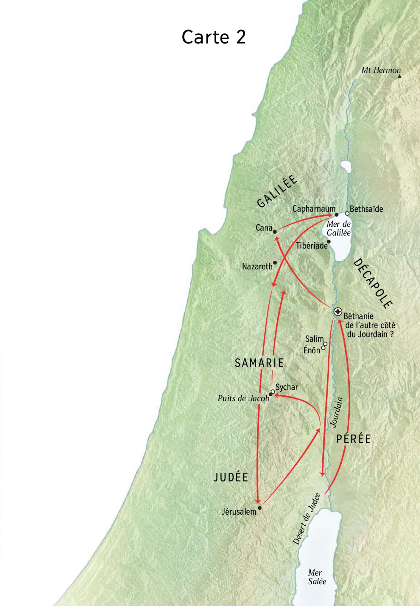

Jésus et Jean le Baptiste en Judée

Carte 2
Jésus va à Jérusalem pour la première Pâque de son ministère
Date: +30, Mars/Avril
Lieu: Jérusalem, Judée
Jean 2:13 : La purification du temple
13 La Pâque juive était proche et Jésus monta à Jérusalem.
- Pessa’h, la Pâque juive, commémore la libération des esclaves israélites en Égypte antique
Il chasse les vendeurs et les changeurs du temple
Date: +30, Mars/Avril
Lieu: Jérusalem, Judée
Jean 2:14 : La purification du temple
14 Il trouva dans le temple les marchands de bœufs, de brebis et de colombes ainsi que les changeurs qui s’y étaient installés. 15 Alors, s’étant fait un fouet avec des cordes, il les chassa tous du temple, et les brebis et les bœufs ; il dispersa la monnaie des changeurs, renversa leurs tables ; 16 et il dit aux marchands de colombes : « Otez tout cela d’ici et ne faites pas de la maison de mon Père une maison de trafic. » 17 Ses disciples se souvinrent qu’il est écrit : Le zèle de ta maison me dévorera. 18 Mais les autorités juives prirent la parole et lui dirent : « Quel signe nous montreras-tu, pour agir de la sorte ? » 19 Jésus leur répondit : « Détruisez ce temple et, en trois jours, je le relèverai. » 20 Alors ces Juifs lui dirent : « Il a fallu quarante-six ans pour construire ce temple et toi, tu le relèverais en trois jours ? » 21 Mais lui parlait du temple de son corps. 22 Aussi, lorsque Jésus se releva d’entre les morts, ses disciples se souvinrent qu’il avait parlé ainsi, et ils crurent à l’Ecriture ainsi qu’à la parole qu’il avait dite.
Jean 2:23 : La foi qui ne suffit pas
23 Tandis que Jésus séjournait à Jérusalem, durant la fête de la Pâque, beaucoup crurent en son nom à la vue des signes qu’il opérait. 24 Mais Jésus, lui, ne croyait pas en eux, car il les connaissait tous, 25 et il n’avait nul besoin qu’on lui rendît témoignage au sujet de l’homme : il savait, quant à lui, ce qu’il y a dans l’homme.
Entretien de nuit avec Nicodème, pharisien
Date: +30, Avril
Lieu: Jérusalem, Judée
Jean 3:1 : L’entretien avec Nicodème
1 Or il y avait, parmi les Pharisiens, un homme du nom de Nicodème, un des notables juifs. 2 Il vint, de nuit, trouver Jésus et lui dit : « Rabbi, nous savons que tu es un maître qui vient de la part de Dieu, car personne ne peut opérer les signes que tu fais si Dieu n’est pas avec lui. » 3 Jésus lui répondit : « En vérité, en vérité, je te le dis : à moins de naître de nouveau, nul ne peut voir le Royaume de Dieu. » 4 Nicodème lui dit : « Comment un homme pourrait-il naître s’il est vieux ? Pourrait-il entrer une seconde fois dans le sein de sa mère et naître ? » 5 Jésus lui répondit : « En vérité, en vérité, je te le dis : nul, s’il ne naît d’eau et d’Esprit, ne peut entrer dans le Royaume de Dieu. 6 Ce qui est né de la chair est chair, et ce qui est né de l’Esprit est esprit. 7 Ne t’étonne pas si je t’ai dit : “Il vous faut naître d’en haut”. 8 Le vent souffle où il veut, et tu entends sa voix, mais tu ne sais ni d’où il vient ni où il va. Ainsi en est-il de quiconque est né de l’Esprit. » 9 Nicodème lui dit : « Comment cela peut-il se faire ? » 10 Jésus lui répondit : « Tu es maître en Israël et tu n’as pas la connaissance de ces choses ! 11 En vérité, en vérité, je te le dis : nous parlons de ce que nous savons, nous témoignons de ce que nous avons vu, et, pourtant, vous ne recevez pas notre témoignage. 12 Si vous ne croyez pas lorsque je vous dis les choses de la terre, comment croiriez-vous si je vous disais les choses du ciel ? 13 Car nul n’est monté au ciel sinon celui qui est descendu du ciel, le Fils de l’homme. 14 Et comme Moïse a élevé le serpent dans le désert, il faut que le Fils de l’homme soit élevé 15 afin que quiconque croit ait, en lui, la vie éternelle. 16 Dieu, en effet, a tant aimé le monde qu’il a donné son Fils, son unique, pour que tout homme qui croit en lui ne périsse pas mais ait la vie éternelle. 17 Car Dieu n’a pas envoyé son Fils dans le monde pour juger le monde, mais pour que le monde soit sauvé par lui. 18 Qui croit en lui n’est pas jugé ; qui ne croit pas est déjà jugé, parce qu’il n’a pas cru au nom du Fils unique de Dieu. 19 Et le jugement, le voici : la lumière est venue dans le monde, et les hommes ont préféré l’obscurité à la lumière parce que leurs œuvres étaient mauvaises. 20 En effet, quiconque fait le mal hait la lumière et ne vient pas à la lumière, de crainte que ses œuvres ne soient démasquées. 21 Celui qui fait la vérité vient à la lumière pour que ses œuvres soient manifestées, elles qui ont été accomplies en Dieu. »
Jésus quitte Jérusalem mais reste en Judée et baptise
Date: +30, Avril-Octobre
Lieu: Judée
Jean 3:22 : Jean et Jésus
22 Après cela, Jésus se rendit avec ses disciples dans la Judée ; il y séjourna avec eux et il baptisait.
Jean le Baptiste baptise à Aïnon (ou Ænon)
Date: +30, Avril-Octobre
Lieu: Aïnon, Judée
Jean 3:23 : Jean et Jésus
23 Jean, de son côté, baptisait à Aïnôn, non loin de Salim, où les eaux sont abondantes. Les gens venaient et se faisaient baptiser. 24 Jean, en effet, n’avait pas encore été jeté en prison. 25 Or il arriva qu’une discussion concernant la purification opposa un Juif à des disciples de Jean. 26 Ils vinrent trouver Jean et lui dirent : « Rabbi, celui qui était avec toi au-delà du Jourdain, celui auquel tu as rendu témoignage, voici qu’il se met lui aussi à baptiser et tous vont vers lui. » 27 Jean leur fit cette réponse : « Un homme ne peut rien s’attribuer au-delà de ce qui lui est donné du ciel. 28 Vous-mêmes, vous m’êtes témoins que j’ai dit : “Moi, je ne suis pas le Messie, mais je suis celui qui a été envoyé devant lui.” 29 Celui qui a l’épouse est l’époux ; quant à l’ami de l’époux, il se tient là, il l’écoute et la voix de l’époux le comble de joie. Telle est ma joie, elle est parfaite. 30 Il faut qu’il grandisse, et que moi, je diminue.
Jean 3:31 : Celui qui vient d’en haut
31 « Celui qui vient d’en haut est au-dessus de tout. Celui qui est de la terre est terrestre et parle de façon terrestre. Celui qui vient du ciel 32 témoigne de ce qu’il a vu et de ce qu’il a entendu, et personne ne reçoit son témoignage. 33 Celui qui reçoit son témoignage ratifie que Dieu est véridique. 34 En effet, celui que Dieu a envoyé dit les paroles de Dieu, qui lui donne l’Esprit sans mesure. 35 Le Père aime le Fils et il a tout remis en sa main. 36 Celui qui croit au Fils a la vie éternelle ; celui qui n’obéit pas au Fils ne verra pas la vie, mais la colère de Dieu demeure sur lui. »
Arrestation de Jean le Baptiste
Date: +30, Octobre
Luc 3:19 : Fin du ministère de Jean le Baptiste
19 Mais Hérode le tétrarque, qu’il blâmait au sujet d’Hérodiade, la femme de son frère, et de tous les forfaits qu’il avait commis, 20 ajouta encore ceci à tout le reste : il enferma Jean en prison.
Jésus quitte la Judée pour la Galilée
Date: +30, Novembre
Lieu: Judée
Matthieu 4:12 : Jésus se retire en Galilée
12 Ayant appris que Jean avait été livré, Jésus se retira en Galilée.
Jean 4:1 : L’entretien avec la Samaritaine
1 Quand Jésus apprit que les Pharisiens avaient entendu dire qu’il faisait plus de disciples et en baptisait plus que Jean, 2 – à vrai dire, Jésus lui-même ne baptisait pas, mais ses disciples – 3 il quitta la Judée et regagna la Galilée.
Jésus passe par la Samarie : une femme de Sychar et plusieurs samaritains se convertissent
Date: +30, Décembre
Lieu: Sychar, Samarie
Jean 4:4 : L’entretien avec la Samaritaine
4 Or il lui fallait traverser la Samarie. 5 C’est ainsi qu’il parvint dans une ville de Samarie appelée Sychar, non loin de la terre donnée par Jacob à son fils Joseph, 6 là même où se trouve le puits de Jacob. Fatigué du chemin, Jésus était assis tout simplement au bord du puits. C’était environ la sixième heure. 7 Arrive une femme de Samarie pour puiser de l’eau. Jésus lui dit : « Donne-moi à boire. » 8 Ses disciples, en effet, étaient allés à la ville pour acheter de quoi manger. 9 Mais cette femme, cette Samaritaine, lui dit : « Comment ? Toi qui es Juif, tu me demandes à boire, à moi, une femme, une Samaritaine ? » Les Juifs, en effet, ne veulent rien avoir de commun avec les Samaritains. 10 Jésus lui répondit : « Si tu connaissais le don de Dieu et qui est celui qui te dit : “Donne-moi à boire”, c’est toi qui aurais demandé et il t’aurait donné de l’eau vive. » 11 La femme lui dit : « Seigneur, tu n’as pas même un seau et le puits est profond ; d’où la tiens-tu donc, cette eau vive ? 12 Serais-tu plus grand, toi, que notre père Jacob qui nous a donné le puits et qui, lui-même, y a bu ainsi que ses fils et ses bêtes ? » 13 Jésus lui répondit : « Quiconque boit de cette eau-ci aura encore soif ; 14 mais celui qui boira de l’eau que je lui donnerai n’aura plus jamais soif ; au contraire, l’eau que je lui donnerai deviendra en lui une source jaillissant en vie éternelle. » 15 La femme lui dit : « Seigneur, donne-moi cette eau pour que je n’aie plus soif et que je n’aie plus à venir puiser ici. » 16 Jésus lui dit : « Va, appelle ton mari et reviens ici. » 17 La femme lui répondit : « Je n’ai pas de mari. » Jésus lui dit : « Tu dis bien : “Je n’ai pas de mari” ; 18 tu en as eu cinq et l’homme que tu as maintenant n’est pas ton mari. En cela tu as dit vrai. » 19 – « Seigneur, lui dit la femme, je vois que tu es un prophète. 20 Nos pères ont adoré sur cette montagne et vous, vous affirmez qu’à Jérusalem se trouve le lieu où il faut adorer. » 21 Jésus lui dit : « Crois-moi, femme, l’heure vient où ce n’est ni sur cette montagne ni à Jérusalem que vous adorerez le Père. 22 Vous adorez ce que vous ne connaissez pas ; nous adorons ce que nous connaissons, car le salut vient des Juifs. 23 Mais l’heure vient, elle est là, où les vrais adorateurs adoreront le Père en esprit et en vérité ; tels sont, en effet, les adorateurs que cherche le Père. 24 Dieu est esprit et c’est pourquoi ceux qui l’adorent doivent adorer en esprit et en vérité. » 25 La femme lui dit : « Je sais qu’un Messie doit venir – celui qu’on appelle Christ. Lorsqu’il viendra, il nous annoncera toutes choses. » 26 Jésus lui dit : « Je le suis, moi qui te parle. » 27 Sur quoi les disciples arrivèrent. Ils s’étonnaient que Jésus parlât avec une femme ; cependant personne ne lui dit « Que cherches-tu ? » ou « Pourquoi lui parles-tu ? » 28 La femme alors, abandonnant sa cruche, s’en fut à la ville et dit aux gens : 29 « Venez donc voir un homme qui m’a dit tout ce que j’ai fait. Ne serait-il pas le Messie ? » 30 Ils sortirent de la ville et allèrent vers lui. 31 Entre-temps, les disciples le pressaient : « Rabbi, mange donc. » 32 Mais il leur dit : « J’ai à manger une nourriture que vous ne connaissez pas. » 33 Sur quoi les disciples se dirent entre eux : « Quelqu’un lui aurait-il donné à manger ? » 34 Jésus leur dit : « Ma nourriture, c’est de faire la volonté de celui qui m’a envoyé et d’accomplir son œuvre. 35 Ne dites-vous pas vous-mêmes : “Encore quatre mois et viendra la moisson” ? Mais moi je vous dis : levez les yeux et regardez ; déjà les champs sont blancs pour la moisson ! 36 Déjà le moissonneur reçoit son salaire et amasse du fruit pour la vie éternelle, si bien que celui qui sème et celui qui moissonne se réjouissent ensemble. 37 Car en ceci le proverbe est vrai, qui dit : “L’un sème, l’autre moissonne.” 38 Je vous ai envoyés moissonner ce qui ne vous a coûté aucune peine ; d’autres ont peiné et vous avez pénétré dans ce qui leur a coûté tant de peine. » 39 Beaucoup de Samaritains de cette ville avaient cru en lui à cause de la parole de la femme qui attestait : « Il m’a dit tout ce que j’ai fait. » 40 Aussi, lorsqu’ils furent arrivés près de lui, les Samaritains le prièrent de demeurer parmi eux. Et il y demeura deux jours. 41 Bien plus nombreux encore furent ceux qui crurent à cause de sa parole à lui ; 42 et ils disaient à la femme : « Ce n’est plus seulement à cause de tes dires que nous croyons ; nous l’avons entendu nous-mêmes et nous savons qu’il est vraiment le Sauveur du monde. »